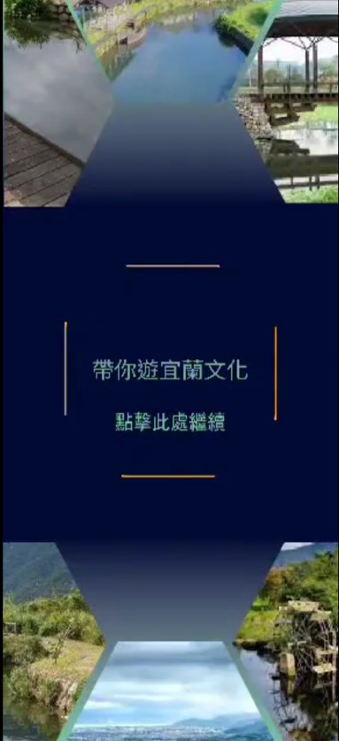
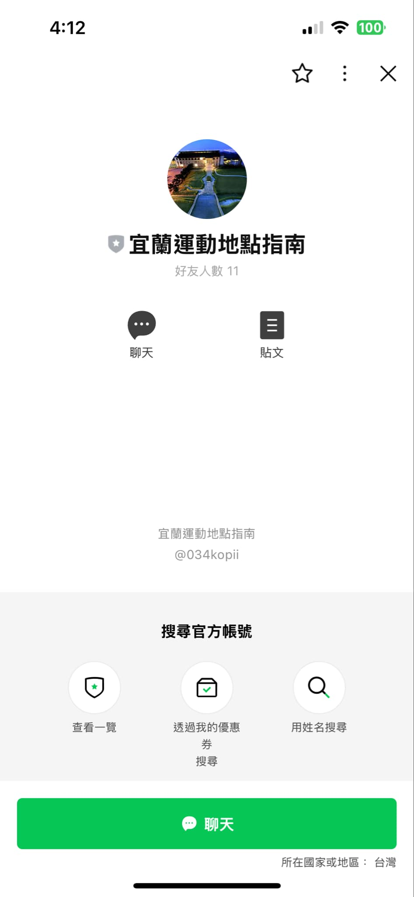
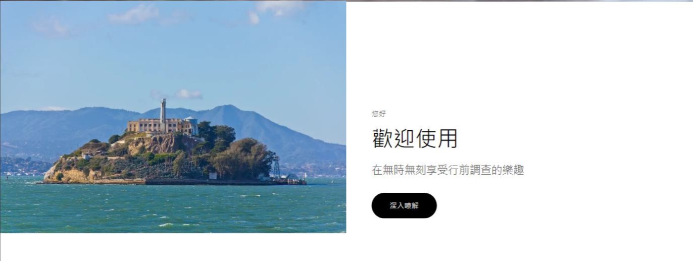

Stargazer

AR APP
帶你遊宜蘭
藉由AR系統帶領觀光客遊歷宜蘭著名景點
SEE MORE ↗
帶你遊宜蘭
使用Unity開發的導覽程式，在進入導覽區域後可以嘗試尋找著名地標進行掃描，在掃描時系統會顯示3D模型並作介紹，掃描完該地區全部地標後可以與攤販逕行折價
作品類型
AR APP

LINE BOT
宜蘭運動指南
在LINE裡加入官方帳號即可與機器人詢問宜蘭運動資訊
SEE MORE ↗
宜蘭運動指南
在LINE平台上與GEMINI大語言模型進行串接，在進行對答時機器人繪根據GOOGLE裡的龐大資料來為使用者進行推薦。
作品類型
LINE BOT

網站設計
帶你遊宜蘭
【APP帶你遊宜蘭】的導覽窗口，從此處了解、下載APP
SEE MORE ↗
帶你遊宜蘭
【APP帶你遊宜蘭】的導覽窗口，網站中繪有APP介紹、景點說明GOOGLE導航可以幫助使用者進行行前調查，再前往當地錢也可藉由網站APP。
作品類型
網站設計
<
>
See All ↗